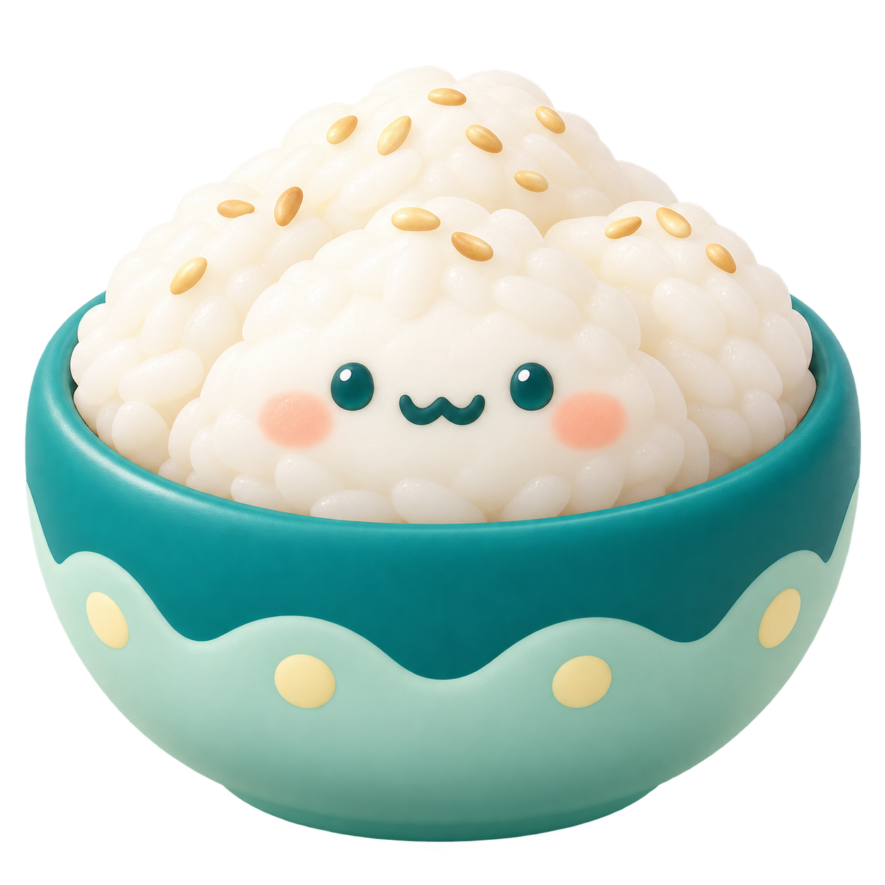

동글동글, 다맛다.
밥 · 면 · 커피. 팔다리 없는 음식 친구들.

밥
면
커피
고르고 → 담아서 → 보내기
로딩과 전송은 각각 움직이는 벡터로 만들었어요.
모션 직접 보기 ↗캐릭터: 내장 이미지 생성 도구 · 투명 PNG / UI 아이콘과 모션: SVG
밥 · 면 · 커피. 팔다리 없는 음식 친구들.

로딩과 전송은 각각 움직이는 벡터로 만들었어요.
모션 직접 보기 ↗캐릭터: 내장 이미지 생성 도구 · 투명 PNG / UI 아이콘과 모션: SVG